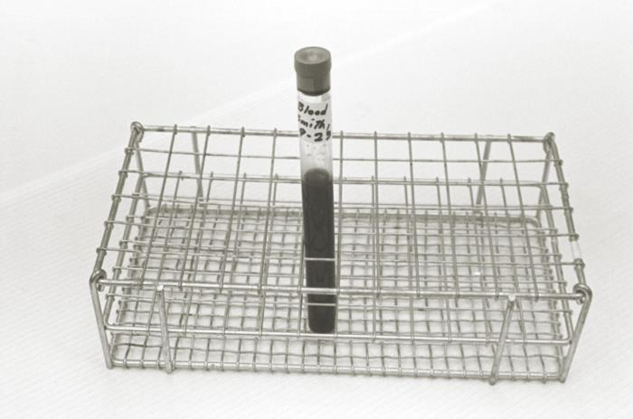

Por que DNA fetal no sangue da mãe ainda não fecha cariótipo?
Duplo, triplo, quádruplo e NIPT
Testes bioquímicos otimizam o rastreio. NIPT ≥10 sem tem DNA fetal — e ainda é rastreio.
Parte G · GenéticaIDs 168–180E1 · Pergunta central
Composição do duplo, triplo e quádruplo
Testes bioquímicos otimizam a sensibilidade do rastreio (duplo / triplo / quádruplo).
Teste
Quando
Marcadores
Duplo
11–14
hCG + PAPP-A
Triplo
típico 2ºT
hCG + AFP + estriol
Quádruplo
idem
triplo + inibina A
hCG entra no duplo, triplo e quádruplo. Se quiser biofísico + bioquímico no mesmo período (11–14): US + teste duplo. Escolha prática: fazer tudo cedo (biofísico + duplo) ou deixar sangue para triplo/quádruplo depois — ambos aceitáveis.
NIPT a partir da 10ª semana
NIPT (quando possível): pesquisa fragmentos de DNA fetal circulantes no sangue materno. NIPT a partir da 10ª semana. Avalia cromossomopatias (ex.: trissomia 21, 18) — não "vê" toda malformação estrutural / não substitui US. Também pode informar sexagem fetal (aspecto prático). NIPT não é rotina MS / é mais caro — ofertar quando viável.
DNA fetal livre ainda é rastreio
Pegadinha: mesmo com DNA fetal, NIPT é exame de sangue na mãe = rastreio não definitivo. Positivo de NIPT não dispensa confirmação invasiva quando a conduta depende de diagnóstico.
Resumo operacional: Duplo (11–14): hCG+PAPP-A. Triplo (2ºT): hCG+AFP+estriol. Quádruplo: +inibina A. NIPT ≥10 sem: DNA fetal livre, ainda rastreio. Não substitui US.
NIPT: DNA fetal livre no sangue materno a partir da 10ª semana. Ainda é rastreio, não cariótipo.

Amostra sanguínea · Domínio público
Quiz — Página 13
Q1. Teste duplo (11–14) inclui:
A AFP + estriol + inibina.
BhCG + PAPP-A.
C Só AFP.
D Apenas NIPT.
✓ Correto! Teste duplo (11–14 sem) = hCG + PAPP-A.
✗ Incorreto. O teste duplo do 1º trimestre (11–14 sem) é hCG + PAPP-A.
Q2. NIPT positivo para T21:
A Diagnóstico definitivo — dispensa invasivo.
BRastreio de alto risco — confirmar com método invasivo se a decisão clínica exigir.
C Erro de laboratório sempre.
D Indica interrupção automática.
✓ Correto! DNA fetal livre não transforma sangue materno em cariótipo. NIPT positivo = rastreio de alto risco.
✗ Incorreto. NIPT é rastreio, não diagnóstico. Positivo requer confirmação invasiva.
Q3. NIPT substitui o ultrassom morfológico?
A Sim, sempre.
BNão — não vê toda malformação estrutural.
C Só no 3ºT.
D Só se Rh negativo.
✓ Correto! NIPT avalia cromossomopatias, não vê malformações estruturais — não substitui o US morfológico.
✗ Incorreto. NIPT não substitui o US morfológico — não vê toda malformação estrutural.